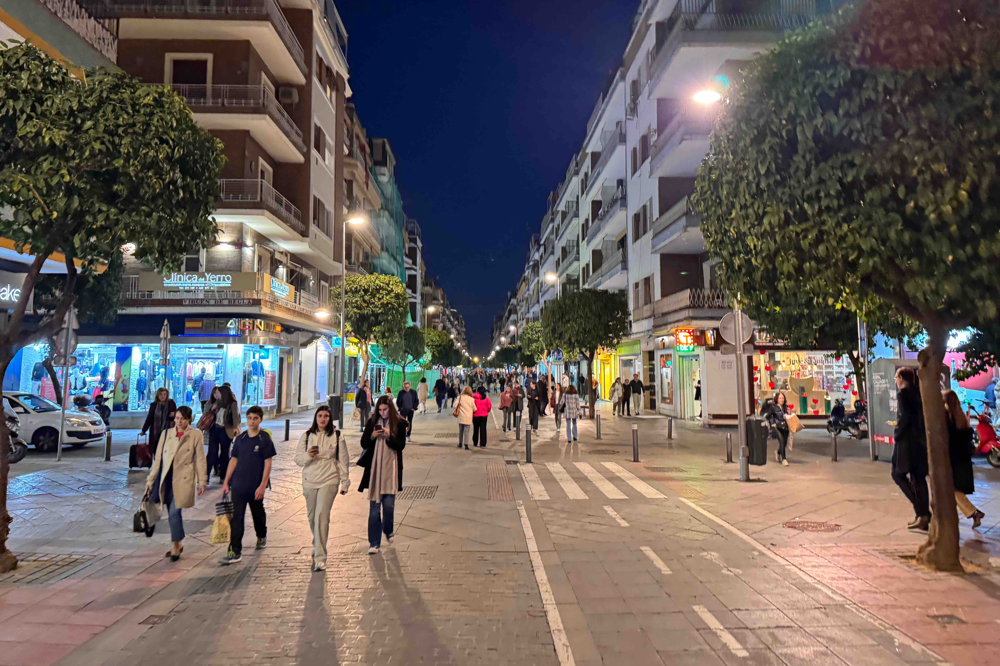

I Will Walk Everywhere
I wrote an essay about Seville in my urban ecology class, and it got me thinking about how awesome that place is. The assignment was about public spaces that have shaped you, and I picked Calle Asunción. It was so hard to keep my essay short because this street demonstrates everything we talked about in the class. The ratio of street to building height is 1:1, which makes it feel like an enclosed public room and gives it a sense of space. It’s pedestrian oriented, people spend time there. There is a single one lane road that is rarely used by cars, instead everyone walks and bikes. Kids play football in the streets, and neighbors talk from their balconies to the street below. There are shops and trees and outdoor seating and blah blah blah. In summary this place is perfect. It has a strong identity and is a public space people want to spend time in. It’s not something people want to pass through.

I miss Calle Asunción. I really like walking or skateboarding everywhere I need to go. I want cities in the United States to transition to pedestrian oriented design, but I don’t know if it’s even possible because they aren’t dense enough. Most American cities aren’t dense and I don’t know if that is something you can solve. I’m interested to learn more. If it’s not possible here I will move to Europe.
-Alec